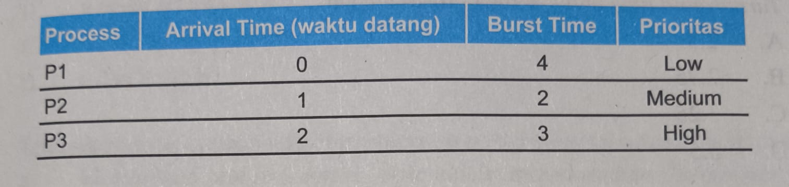
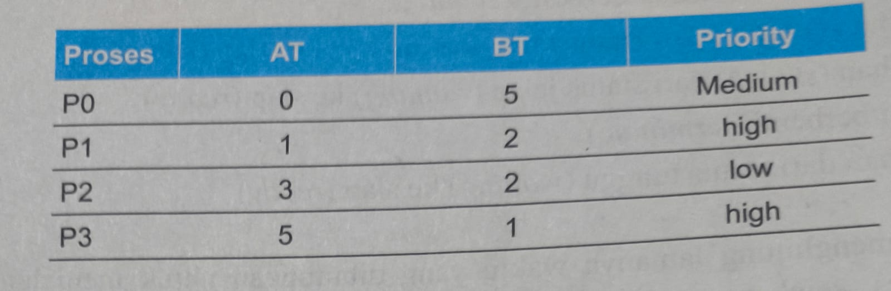
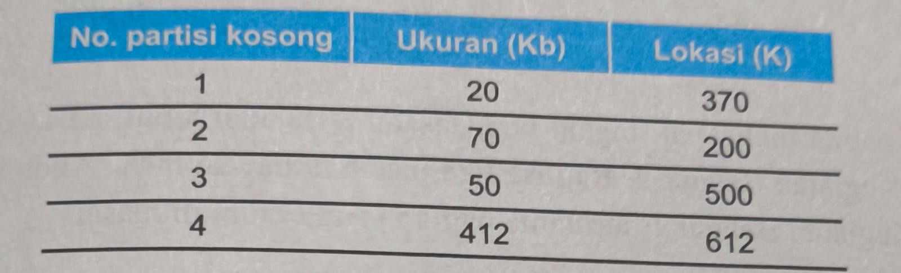

a. Program sistem untuk menginput dan
mencetak data ke printer
b. Lapisan antara prosesor dan
perangkat keras
c. User interface antara pengguna
dengan software komputer
d. Manajer sumber daya komputer yang
mengatur alokasi ke program dan pengguna
d. Manajer sumber daya komputer yang mengatur alokasi ke program dan
pengguna.
2.
Tugas dari resource allocator atau resource manager pada Sistem
Operasi adalah
a.mengalokasikan sumber daya komputer
b. mengoperasikan aplikasi komputer
c. mengontrol hardware komputer
d. menyimpan program dan data komputer
a. mengalokasikan sumber daya komputer
3.
I/O controller, disk, printer, keyboard, mouse, webcam, USB
merupakan sumber daya hardware komputer yang bersifat
a. Primer
b. Sekunder
c. Tersier
d. allocator
b. Sekunder
4.
Sistem komputer secara global terdiri dari empat komponen, yang
memiliki fungsi untuk menyelesaikan masalahnya menggunakan
komputer adalah....
a. hardware
b. sistem Operasi
c. program Aplikasi
d. pemakai
d. Pemakai
5.
Komunikasi sistem operasi dengan perangkat I/O ini dapat
terlaksana berkat suatu kode program disebut?
a. device driver
b. interface hardware
c. hardisk controller
d. I/0 controller
a. device driver
6.
definisi sistem operasi sbagai kernel adalah
a. program yang terus menerus runing
selama komputer dihidupkan
b. mengatur atau menjaga komputer dan
berbagai kejahatan komputer
c. program yang digunakan untuk
mengontrol program lainnya
d. kumpulan yang mengatur kerja
hardware
a. program yang terus menerus runing selama komputer dihidupkan
7.
tujuan dari sistem operasi adalah
a. sebagai antarmuka antara user dengan
hardware
b. menunjukkan lingkungan dimana
seorang user dapat mengeksekusi program-programnya
c. menyediakan fasilitas sistem operasi
d. memungkinkan adanya pemakaian
bersama hardware maupun data antar user
b. menunjukkan lingkungan dimana seorang user dapat mengeksekusi
program-programnya
8.
memori daan prosesor merupakan sumber daya hardware komputer yang
bersifat
a. primer
b. sekunder
c. tersier
d. allocator
a. primer
9.
perangkat I/O driver yang bersifat global adalah
a. generic devie driver
b. utility
c. harddisk controller
d. I/O controller
a. perangkat I/O driver yang bersifat global adalah
10.
jika ada seorang programmer mengembangkan aplikasi dengan kumpulan
instruksi-instruksi bahasa mesin yang akan mengontrol hardware
komputer, maka programmer tersebut membutuhkan suatu aplikasi
pemrograman yang disebut
a. utility
b. allocator
c. program aplikasi
d. desainer S.O
a. utility
11.
program dimuat dalam memori dengan cara dijalankan per instruksi;
menekan tombol di console untuk menjalankan kesuluruhan program
disebut..
a.serial processing
b.sistem batch sederhana
c.resident monitor
d.off-line processing
a.
12.
pengumpulan dari job-job yang sama dari satu angkatan merupakan
batch system. sistem batch yang merupakan program kecil yang
bersifat residen di memori berisi urutan-urutan job yang akan
berpindah otomatis disebut dengan..
b. off-line processing
a. resident monitor
c. spooling
d. sistem multiprogramming
a.resident monitor
13.
overlap operasi antar I/O dengan CPU dapat dilakukan dengan cara
off-line processing. yang dimaksud offline processing adalah
a.data-data dibaca dari card reader
tidak langsung dibawa ke CPU tetapi tersimpan terlebih dahulu pada
tape driver
b.data dibaca secara langsung dari card
reader ke disk
c.data dibaca dari card reader langsung
dibawa ke CPU
d.data dari CPU dikirimkan ke line
printer untuk dicetak
a.data-data dibaca dari card reader tidak langsung dibawa ke CPU
tetapi tersimpan terlebih dahulu pada tape driver
14.
job-job yang sudah berkelompok di pool (biasanya berada di disk)
akan dipilih untuk dijalankan secara berurutan dengan cara FIFO
(First in First out) disebut dengan
a.spooling
b.sistem time-sharing
c.sistem terdistribusi
d.sistem multiprogram
d.sistem multiprogram
15.
beberapa job yang siap untuk dieksekusi dikumpulkan pada suatu
pool. sistem operasi mengambil beberapa job yang siap dieksekusi
untuk diletakkan di memori utama. jika job sedang dieksekusi
menunggu beberapa task (seperti masukkan keyboard, dll) maka
diganti dengan job berikutnya.
jika menggunakan sistem time-sharing dan quantum time sebesar 2
ms, maka lama waktu
yang dibutuhkan untuk menyelesaikan proses p2 adalah
a.10 ms
b.12 ms
c.14 ms
d.15 ms
a. 10 ms
16.
pada sistem multiprocessing menjalankan suatu atau lebih Program
menggunakan lebih dari satu prosesor. pada soal no 15 apabila
menggunakan 2 CPU maka proses P3 akan selesai dalam waktu..
a.10 ms
b.12 ms
c.14 ms
d.15 ms
a. 10 ms
17.
keuntungan menggunakan sistem terdeistrubusi antara lain..
a.menjamin critical task dapat
diselesaikan tepat pada waktunya
b.pemakaian resource secara bersama
sama
c.memberikan prioritas pada critical
task dibanding dengan task yang lainnya
d.tiap-tiap prosesor mempunyai sistem
operasi yang sama
b. pemakaian resource secara bersama sama
18.
alasan mengapa sistem pararel digunakan adalah
a.menjamin critical task dapat
diselesaikan tepat pada waktunya
b.pemaikaian resource secara
bersama-sana
c.meningkatkan kehandalan (reliability)
d.tiap-tiap prosesor mrmpunyai sistem
operasi yang sama
c. mengingkatkan kehandalan (reliability)
19.
pada sistem hard real-time berfungsi sebagai..
a.tiap-tiap prosesor mempunyai sistem
operasi yang sama
b.pemakaian resource secara
bersama-sama
c.meningkatkan kehandalan (reliability)
d.menjamin critical task dapat di
selesaikan pada waktunya
d. menjamin critical task dapat di selesaikan pada waktunya
20.
pada sistem soft real-time berfungsi sebagai
a.tiap-tiap prosesor mempunyai sistem
operasi yang sama
b.pemaikaian resource secara
bersama-sama
c.meningkatkan kehandalan (reliability)
d.menye tugas kritis berdasarkan
priotitas yang lebih tinggi daripada tugas yang lain
a. tiap-tiap prosesor mempunyai sistem operasi yang sama
📘 Modul 2
( Tes Formatif 1- 2 )
1.
komponen sistem operasi disebut juga modular karena..
a. memiliki fungsi yang berbeda dan dapat
dikembangkan secara terpisah
b.memiliki fungsi yang sama dan tidak
dapat dikembangkan secara terpisah
c.memiliki fungsi dan seluruh komponen
yang menyusun sistem operasi tersebut saling bekerja untuk satu
tujuan yang sama
d.seluruh komponen bekerja untuk tujuan
yang berbeda
a.memiliki fungsi yang berbeda dan dapat dikembangkan secara terpisah
2.
pengertian proses dalam sistem informasi adalah..
a. program yang sedang di eksekusi
b.kumpulan instruksi yang sedang ditulis
dalam bahasa yang dimengerti sistem operasi
c.sumber daya komputer CPU time
d.berkas-berkas dan perangkat I/O
a. program yang sedang di eksekusi
3.
Sistem operasi bertanggung jawab atas aktivitas yang berkaitan
dengan manajemen proses kelengkapan mekanisme untuk sinkronasi
proses. Yang dimaksud dengan sinkronisasi proses adalah
a. pembuatan atau penghapusan proses
b. pengaturan beberapa proses yang
dieksekusi bersamaan agar setiap proses berjalan dengan lancar
c. menunda atau melanjutkan proses
d. kelengkapan untuk komunikasi proses
b. pengaturan beberapa proses yang dieksekusi bersamaan agar setiap
proses berjalan dengan lancar
4.
Fungsi dari memori utama adalah.....
a. agar utilitas CPU meningkat dan untuk
meningkatkan efisiensi pemakaian memori
b. tempat penyimpanan instruksi/data yang
akses datanya digunakan oleh CPU dan perangkat I/O
c. sebuah array yang besar dari word atau
byte yang ukurannya mencapai ratusan, ribuan, atau bahkan jutaan.
d. tempat penyimpanan data yang bersifat
volatile
b. tempat penyimpanan instruksi/data yang akses datanya digunakan oleh
CPU dan perangkat I/O
5.
Aktivitas yang memberikan tanggapan terhadap manajemen memori utama
dalam sistem operasi adalah .....
a. memutuskan proses-proses mana saja
yang harus dipanggil ke prosesor jika masih ada ruang di memori
b. mengalokasikan ruang RAM jika
diperlukan.
c. menjaga dan memelihara bagian-bagian
memori yang sedang digunakan dari yang menggunakan.
d. mendealokasikan ruang ROM jika
diperlukan
c. menjaga dan memelihara bagian-bagian memori yang sedang digunakan
dari yang menggunakan.
6.
Pengertian dari memori sekunder adalah
a. sarana penyimpanan yang berada satu
tingkat diatas memori utama sebuah komputer
b. memori yang memiliki hubungan langsung
dengan prosesor melalui bus
c. sarana penyimpanan yang berada satu
tingkat di bawah memori utama sebuah komputer
d. memori yang harus melewati perangkat
I/O
c. sarana penyimpanan yang berada satu tingkat di bawah memori utama
sebuah komputer
7.
Fungsi sarana penyimpanan sekunder adalah...
a. menyimpan berkas secara sementara
b. menjadikan beberapa ruang kosong dari
disk menjadi alamat memori utama
c. mempercepat akses prosesor ke memori
virtual
d. menyimpan program yang belum
dieksekusi prosesor
d. menyimpan program yang belum dieksekusi prosesor
8.
Aktivitas yang memberikan tanggapan terhadap manajemen memori
sekunder dalam sistem operasi adalah ....
a. sistem operasi mengatur ruangan pada
disk yang sudah terpakai
b. sistem operasi mengalokasikan
penyimpanan ke dalam memori utama
c. sistem operasi melakukan penjadwalan
disk membaca, mengubah, menghapus data di penyimpanan utama
d. proses pelayanan I/O dengan urutan
tepat membawa informasi operasi input atau output
d. proses pelayanan I/O dengan urutan tepat
9.
Sistem operasi sering disebut device manager karena
a. menampung data sementara dari/ke
perangkat I/O
b. melakukan penjadwalan pemakaian I/O
sistem supaya lebih efisien
c. mengatur berbagai macam perangkat
d. meletakkan suatu pekerjaan program
pada penyangga
c. mengatur berbagai macam perangkat
10.
Fungsi sistem operasi untuk sistem I/O adalah
a. menyimpan data permanen dari/ke
perangkat I/O
b. melakukan penjadwalan proses supaya
lebih efisien.
c. menyediakan driver perangkat yang
umum.
d. memberikan akses langsung ke setiap
perangkat tanpa menunggu perangkat siap.
c. menyediakan driver perangkat yang umum.
11.
Pengertian file atau berkas yang paling tepat adalah
a. program komputer yang dijalankan pada
sistem operasi
b. representasi program dan data yang
berupa kumpulan informasi yang saling berhubungan dan disimpan di
perangkat penyimpanan
c. data-data yang terdapat di dalam
sistem operasi komputer
d. informasi berupa gambar, dokumen dan
video yang terdapat pada sistem operasi
b. representasi program dan data yang berupa kumpulan informasi
12.
Aktivitas sistem operasi yang memberikan tanggapan terhadap
manajemen file adalah.....
a. pemetaan file ke memori utama
b. pembuatan dan penghapusan file atau
direktori
c. backup file ke media penyimpanan yang
volatile
d. menghapus akun pengguna sistem operasi
b. pembuatan dan penghapusan file atau direktori
13.
Sistem operasi menyimpan file ke media penyimpanan yang stabil
dimana file tersebut tidak akan pernah hilang walaupun tidak
mendapatkan daya listrik. Dalam manajemen file, ini merupakan
aktivitas agar
a. backup file ke media penyimpanan yang
stabil
b. pemetaan file ke memori sekunder
c. pembuatan dan penghapusan file atau
direktori
d. menunjukkan tempat lokasi berkas atau
direktori tersebut diletakkan
a. backup file ke media penyimpanan yang stabil
14.
Fungsi sistem operasi yang melawan ancaman penggunaan yang tidak sah
atau gangguan yang diakibatkan oleh pengguna sistem komputer adalah
fungsi
a. proteksi
b. keamanan
c. sistem I/O
d. manajemen file
b. keamanan
15.
Fungsi keamanan sistem operasi adalah ....
a. sistem operasi melawan ancaman serupa
yang diajukan orang-orang di luar kendali dari sistem
b. sistem operasi membiarkan pengguna
lain untuk memodifikasi file/berkas
c. sistem operasi memproteksi sistem
sehingga tidak dapat diakses oleh perangkat jaringan
d. sistem operasi terinfeksi virus
komputer sehingga proses sistem lambat
a. sistem operasi melawan ancaman serupa yang diajukan orang-orang di
luar kendali dari sistem
16.
Ancaman keamanan sistem operasi dimana suatu program yang dirancang
untuk melakukan suatu serangan namun terselubung dengan baik
pengguna tidak sadar telah terjangkit karena semua program berjalan
lancar dengan tujuan sebagai pintu celah keamanan disebut
a. intruder
b. trojan horse
c. malware
d. virus
b. trojan horse
17.
Fungsi sistem operasi dalam manajemen jaringan adalah menyediakan
akses bagi pengguna ke sistem operasi
a. menyebabkan komputasi semakin lambat
b. mengatur model komunikasi antar
komputer dan komunikasi antar perangkat jaringan
c. mengurangi ketersediaan data dan
kemampuan
d. mengatur model komunikasi antar
komputer dan komunikasi antar perangkat jaringan
c. mengatur model komunikasi antar komputer dan komunikasi antar
perangkat jaringan
18.
Pengertian sistem terdistribusi dalam manajemen jaringan sistem
operasi adalah sistem...
a. yang berjalan pada satu buah mesin,
yang melakukan sharing memori dalam satu area jaringan
b. yang melakukan pemantauan pada setiap
elemen jaringan komputer
c. mengatur akses ke sumber daya jaringan
sehingga informasi tidak dapat diperoleh tanpa izin
d. yang berjalan pada beberapa buah
mesin, yang tidak melakukan sharing memori tetapi terlihat bagi
pengguna sebagai satu buah komputer
d. yang berjalan pada beberapa buah mesin, yang tidak melakukan
sharing memori tetapi terlihat bagi pengguna sebagai satu buah
komputer
19.
Pengertian Command Interpreter System adalah sistem
a. pembaca program komputer agar dapat
dijalankan di sistem operasi
b. penerjemah perintah tekstual atau
berkas dari pengguna untuk dijalankan di sistem operasi
c. deteksi kesalahan aplikasi komputer
pada sistem operasi
d. pemblokir akses pengguna ke dalam
sistem operasi
b. penerjemah perintah tekstual atau berkas dari pengguna untuk
dijalankan di sistem operasi
20.
Dalam system call, aktivitas melakukan mengakhiri dan membatalkan
proses, mengambil dan eksekusi proses, membuat dan mengakhiri
proses, dan menentukan serta mengeset atribut proses disebut....
a. manipulasi berkas
b. kontrol proses
c. manipulasi perangkat
d. informasi lingkungan sistem
b. kontrol proses
21.
Pengertian struktur sistem operasi adalah
a. komponen-komponen sistem operasi yang
dihubungkan dan dibentuk di dalam kernel
b. pengelola seluruh sumber daya yang
terdapat pada sistem komputer dan menyediakan sekumpulan layanan ke
pemakai sehingga memudahkan dan menyamankan penggunaan serta
pemanfaatan sumber daya sistem komputer
c. bagian dari fungsi sistem operasi yang
bertugas memelihara data/record, mendukung program tambahan dan
dukungan input lainnya
d. sistem yang besar dan kompleks
sehingga strukturnya harus dirancang dengan hati-hati serta dapat
dimodifikasi dengan mudah
a. komponen-komponen sistem operasi yang dihubungkan dan dibentuk di
dalam kernel
22.
Pengertian struktur sederhana pada struktur sistem operasi adalah
sistem operasi
a. yang besar dan kompleks sehingga
strukturnya harus dirancang dengan hati-hati
b. sangat kecil, sederhana dan memiliki
banyak keterbatasan
c. tidak terstruktur sebagai kumpulan
prosedur yang masing-masing dapat saling dipanggil jika dibutuhkan
d. dibangun dengan sistem lapisan dari
lapisan terbawah perangkat keras dan paling atas user program
b. sangat kecil, sederhana dan memiliki banyak keterbatasan
23.
Contoh sistem operasi dengan struktur sederhana adalah.....
a. Windows
b. Linux
c. MS-DOS
d. Android
c. MS-DOS
24.
Struktur UNIX yang berisi sistem berkas, penjadwalan CPU, manajemen
memori dan fungsi sistem operasi adalah .....
a. system call
b. shell
c. program sistem
d. kernel
d. kernel
25.
Pengertian sistem monolithic pada struktur sistem operasi adalah
a. sistem operasi sangat kecil, sederhana
dan memiliki banyak keterbatasan
b. sistem operasi sebagai suatu hierarki
lapisan dimana setiap prosedur dibangun di atas satu prosedur yang
lain
c. struktur sistem operasi tidak
terstruktur berupa kumpulan prosedur yang masing-masing dapat saling
dipanggil jika dibutuhkan
d. sistem operasi membuat suatu bayangan
proses dalam jumlah banyak, yang masing-masing dieksekusi oleh
prosesornya sendiri dengan memori virtual sendiri
c. struktur sistem operasi tidak terstruktur berupa kumpulan prosedur
yang masing-masing dapat saling dipanggil jika dibutuhkan
26.
Struktur sistem monolithic dalam sistem operasi yaitu program utama,
service procedure dan utilitas prosedur. Fungsi utilitas prosedur
adalah
a. meminta service procedure
b. mengerjakan suatu hal yang diinginkan
oleh beberapa service procedure seperti pengambilan data dari
program pemakai
c. membawa system call
d. system call mempunyai satu prosedur
yang akan mengelolanya
b. mengerjakan suatu hal yang diinginkan oleh beberapa service
procedure seperti pengambilan data dari program pemakai
27.
Sistem monolithic merupakan struktur sederhana yang dilengkapi
dengan operas dual-mode. Pelayanan yang dilakukan oleh monitor mode
adalah
a. mengambil sejumlah parameter pada
tempat yang telah ditentukan sebelumnya dan kemudian mengeksekusi
suatu instruksi
b. mengeksekusi program yang dikendalikan
oleh pengguna
c. mencari dan mengurangi kerusakan di
dalam sebuah komputer
d. memperbaiki perpindahan kontrol antara
program monitor dan program user secara fleksibel
a. mengambil sejumlah parameter pada tempat yang telah ditentukan
sebelumnya dan kemudian mengeksekusi suatu instruksi
28.
Fungsi mode bit pada sistem operasi dual mode pada sistem monolithic
adalah
a. untuk membedakan antara eksekusi yang
dilakukan oleh sistem operasi dan user program yang dilakukan oleh
user
b. untuk memberikan tanda mode monitor
(0) dan user (1)
c. untuk meningkatkan fungsi kontrol dari
sistem operasi terhadap program komputer berjalan
d. mengimplementasikan sebagian fungsi
sistem operasi pada mode pengguna
b. untuk memberikan tanda mode monitor (0) dan user (1)
29.
Pengertian sistem lapisan pada struktur sistem operasi adalah sistem
operasi.....
a. sangat kecil, sederhana dan memiliki
banyak keterbatasan
b. berbentuk modular dengan memecah
menjadi beberapa lapisan dari yang terendah perangkat keras dan
lapisan teratas adalah tampilan antarmuka pengguna
c. tidak terstruktur sebagai kumpulan
prosedur yang masing-masing dapat saling dipanggil jika dibutuhkan
d. yang menghubungkan perangkat keras
dengan kernel untuk tiap-tiap proses
b. berbentuk modular dengan memecah menjadi beberapa lapisan dari yang
terendah perangkat keras dan lapisan teratas adalah tampilan antarmuka
pengguna
30.
Sistem lapisan pada dasarnya dibuat dengan cara membentuk sistem
operasi menjadi bentuk modular. Yang dimaksud dengan modular sistem
adalah .....
a. mengumpulkan prosedur di dalam agar
dapat saling memanggil satu sama lain
b. memecah modul sistem operasi menjadi
beberapa lapis (tingkat)
c. membagi beberapa modul dan tiap modul
dirancang secara masing-masing
d. menghilangkan komponen-komponen yang
tidak diperlukan dari kernel dan mengimplementasikannya sebagai
sistem
b. memecah modul sistem operasi menjadi beberapa lapis (tingkat)
31.
Contoh sistem operasi dengan struktur berlapis adalah THE
(Technische Hogeschool Eindhoven) lapisan yang berfungsi sebagai
mengalokasikan memori untuk proses adalah .....
a. Hardware
b. User Program
c. Manajemen memori
d. Buffering I/O device
c. Manajemen memori
32.
Contoh lain adalah sistem Venus yang mempunyai tujuh lapisan.
Lapisan bawah (0 sampai 4) digunakan oleh penjadwalan CPU dan
manajemen memori yang kemudian diletakkan dalam suatu microcode.
Fungsi microcode adalah
a. menjadwalkan CPU
b. mengatur alokasi memori
c. mengatur eksekusi lebih cepat dengan
lapisan yang lebih tinggi
d. menjalankan perangkat I/O
c. mengatur eksekusi lebih cepat dengan lapisan yang lebih tinggi
33.
Pengertian mesin virtual pada struktur sistem operasi adalah sistem
operasi
a. sangat kecil, sederhana dan memiliki
banyak keterbatasan
b. berbentuk modular dengan memecah
menjadi beberapa lapisan dari yang terendah perangkat keras dan
lapisan teratas adalah tampilan antarmuka pengguna
c. tidak terstruktur sebagai kumpulan
prosedur yang masing-masing dapat saling dipanggil jika dibutuhkan
d. terlapis yang menghubungkan perangkat
keras dengan kernel untuk tiap tiap proses
d. terlapis yang menghubungkan perangkat keras dengan kernel untuk
tiap tiap proses
34.
Keuntungan menggunakan mesin virtual adalah
a. membutuhkan penyediaan sumber daya
tersendiri dari sistem induk sesuai dengan kebutuhan sistem virtual
mesin
b. membutuhkan konfigurasi sistem yang
lebih kompleks
c. mempersulit proses pemulihan sistem
d. melakukan proteksi keamanan sumber
daya komputer yang digunakan bersama
a. membutuhkan penyediaan sumber daya tersendiri dari sistem induk
sesuai dengan kebutuhan sistem virtual mesin
35.
Contoh sistem operasi yang memakai mesin virtual adalah ....
a. Linux Ubuntu
b. Windows 10
c. IBM VM System
d. MS-DOS
b. Windows 10
36.
Kegunaan mesin virtual salah satunya memungkinkan konsolidasi
server. Pengertian konsolidasi server adalah .....
a. memudahkan pengembang aplikasi karena
tidak memerlukan lingkungan fisik
b. dapat menjalankan perangkat lunak atau
sistem operasi terdahulu
c. beberapa server menjalankan aplikasi
yang hanya memakan sedikit sumber daya, menggabungkan
aplikasi-aplikasi pada satu server walaupun sistem operasi yang
berbeda-beda
d. memudahkan recovery sistem yang
memerlukan portabilitas dan fleksibilitas antar platform
c. beberapa server menjalankan aplikasi yang hanya memakan sedikit
sumber daya, menggabungkan aplikasi-aplikasi pada satu server walaupun
sistem operasi yang berbeda-beda
37.
Pengertian model client server sistem lapisan pada struktur sistem
operasi adalah....
a. sistem operasi sangat kecil, sederhana
dan memiliki banyak keterbatasan
b. sistem operasi yang fungsi-fungsinya
menjadi client process mengirim untuk dilayani ke-server process
c. sistem operasi berbentuk modular
dengan memecah menjadi beberapa lapisan dari yang terendah perangkat
keras dan lapisan teratas adalah tampilan antarmuka pengguna
d. sistem operasi tidak terstruktur
sebagai kumpulan prosedur yang masing-masing dapat saling dipanggil
jika dibutuhkan
b. sistem operasi yang fungsi-fungsinya menjadi client process
mengirim untuk dilayani ke-server process
38.
Pada sistem client server membagi sistem operasi menjadi beberapa
bagian dimana tiap-tiap bagian mengendalikan satu sistem. Jenis
pengendalian tersebut adalah pelayanan ....
a. CPU
b. berkas
c. perangkat lunak
d. harddisk
a. CPU
39.
Keuntungan menggunakan sistem client server dalam struktur sistem
operasi adalah ....
a. mudah diadaptasi pada sistem
terdistribusi
b. pertukaran pesan dapat menjadi
bottleneck
c. pelayanan dilakukan secara lambat
karena harus melalui pertukaran pesan antar client server
d. kesalahan pada suatu subsistem
mengganggu subsistem lain sehingga mengakibatkan sistem mati secara
keseluruhan
b. pertukaran pesan dapat menjadi bottleneck
40.
Fungsi kernel pada proses yang dilakukan pada monitor mode sistem
model client server adalah ....
a. meminta pelayanan client dengan cara
mengirim pesan ke server proses
b. mengembangkan secara modular
c. menghubungkan perangkat keras ketika
proses server kritis
d. memberikan pelayanan memori dan proses
a. meminta pelayanan client dengan cara mengirim pesan ke server
proses
📘 Modul 3
( Tes Formatif 1- 2 )
1.
Definisi proses adalah .....
A. tempat pada komputer di mana program
dijalankan
B. bagian dari program yang disimpan di
komputer sebagai kode-kode yang dapat dijalankan
C. program yang disimpan pada komputer
dalam keadaan pasif
D. program yang sedang dijalankan oleh
komputer
d. program yang sedang dijalankan oleh komputer
2.
Perbedaan antara program dan proses adalah ....
A. program adalah entitas pasif yang
tersimpan pada komputer sedangkan proses adalah program yang aktif
atau sedang dijalankan oleh komputer
B. program tersimpan di perangkat keras
komputer sedangkan proses berada di perangkat lunak komputer
C. program merupakan kode-kode yang bukan
bagian dari sistem operasi sedangkan proses adalah kode-kode bagian
dari sistem operasi
D. program adalah entitas aktif yang
sedang dijalankan oleh komputer sedangkan proses adalah entitas
pasif yang tersimpan pada komponen penyimpanan komputer
a. program adalah entitas pasif ... proses aktif
3.
Berikut yang bukan merupakan kejadian utama yang menyebabkan
terciptanya sebuah proses adalah .....
A. inisialisasi sistem
B. permintaan pengguna untuk menciptakan
proses baru
C. inisialisasi sebuah batch job
D. proses yang telah selesai dieksekusi
oleh CPU
d. proses yang telah selesai dieksekusi oleh CPU
4.
Terdapat empat jenis kondisi yang memungkinkan terjadi ketika proses
diakhiri. Salah satunya adalah ....
A. normal exit
B. abnormal exit
C. unusual exit
D. fatal exit
a. normal exit
5.
Mengeksekusi instruksi ilegal, merujuk pada alamat memori yang tidak
ada, dan melakukan pembagian dengan nol merupakan contoh berhentinya
proses yang disebabkan oleh ....
A. proses telah selesai menjalankan tugas
B. error yang disebabkan oleh proses
C. proses yang mengeksekusi perintah
untuk menghentikan proses lain
D. proses menemukan fatal error
d. proses menemukan fatal error
6.
Keadaan proses menunggu suatu event terjadi atau menunggu sumber
daya yang dibutuhkan tersedia (misalnya respons I/O) untuk
melanjutkan eksekusi disebut ....
A. running
B. blocked
C. active
D. ready
b. blocked
7.
Hal yang dapat menyebabkan proses berada pada keadaan ready adalah
....
A. proses baru selesai diciptakan dan
siap untuk dieksekusi
B. proses yang sedang dieksekusi terkena
interupsi
C. proses telah selesai menunggu suatu
event terjadi atau selesai dalam hal yang berkaitan dengan sistem
I/O
D. semua jawaban benar
d. semua jawaban benar
8.
Ketika proses yang sudah tercipta tidak sedang dieksekusi, proses
berada dalam sebuah antrian. Keadaan proses yang memungkinkan berada
dalam sebuah antrian adalah ....
A. running
B. new dan exit
C. ready dan waiting
D. ready dan running
c. ready dan waiting
9.
Definisi dari Process Control Block adalah ....
A. representasi dari proses pada sistem
operasi berupa informasi-informasi terkait proses tersebut
B. bagian dari proses yang berguna untuk
mengatur CPU dan memori
C. bagian dari sistem operasi yang
berfungsi menjalankan proses
D. blok proses yang digunakan untuk
mengatur keadaan proses dan penggunaan sumber daya komputer
a. representasi dari proses pada sistem operasi
10.
Pada Process Control Block (PCB) terdapat bagian yang digunakan
untuk menyimpan data alamat dari instruksi aksi selanjutnya yang
dieksekusi pada sebuah proses. Bagian tersebut adalah .....
A. informasi status I/O
B. CPU registers
C. program counter
D. informasi penjadwalan CPU
c. program counter
11.
Program Counter adalah bagian dari Process Control Block yang
berfungsi untuk menyimpan informasi ....
a. penggunaan peranti masukan dan
keluaran (I/O device)
b. alamat instruksi yang dieksekusi
selanjutnya pada proses
c. penjadwalan CPU dan penggunaan memori
komputer
d. keadaan (state) proses
b. alamat instruksi yang dieksekusi selanjutnya pada proses
12.
Sebuah proses disebut sebagai proses independen jika proses ....
a. dapat dipengaruhi dan mempengaruhi
proses lain
b. berbagi informasi dengan proses lain
c. tidak dapat dipengaruhi dan
mempengaruhi proses lain
d. dapat dipengaruhi proses lain namun
tidak dapat mempengaruhi proses lain
c. tidak dapat dipengaruhi dan mempengaruhi proses lain
13.
Selain proses independen, terdapat juga proses yang saling terkait
atau disebut cooperating process. Sebuah proses disebut sebagai
cooperating process jika proses ....
a. tidak dapat dipengaruhi proses lain
b. tidak dapat mempengaruhi proses lain
c. berbagi informasi dengan proses lain
d. semua jawaban benar
c. berbagi informasi dengan proses lain
14.
Pengertian dari istilah context switching adalah ....
a. pergantian keadaan proses dari satu ke
yang lainnya
b. perpindahan alokasi CPU dari satu
proses ke proses yang lain yang disertai dengan penyimpanan dan
pemuatan keadaan proses
c. pengalokasian memori dari satu proses
ke proses yang lain
d. pergantian program yang dijalankan
oleh komputer
b. perpindahan alokasi CPU dari satu proses ke proses yang lain yang
disertai dengan penyimpanan dan pemuatan keadaan proses
15.
Terdapat dua jenis penjadwalan proses, yaitu jangka pendek dan
jangka panjang. Pengertian penjadwalan jangka pendek adalah ....
a. penjadwalan proses yang akan
mendapatkan sumber daya I/O
b. pemilihan sebuah proses dari antrian
proses berstatus ready untuk dieksekusi
c. pemilihan proses-proses yang akan
diantrikan sebagai pengguna mendapatkan alokasi CPU
d. pemilihan proses yang akan diubah
keadaannya menjadi waiting melalui penjadwalan yang sudah ditentukan
b. pemilihan sebuah proses dari antrian proses berstatus ready untuk
dieksekusi
16.
Dua bagian pada Process Control Block yang informasinya paling
penting perannya untuk melakukan context switching ketika terjadinya
interupsi pada sebuah proses adalah ....
a. informasi penjadwalan CPU dan
informasi manajemen memori
b. program counter dan CPU register
c. informasi penjadwalan CPU dan keadaan
proses (process state)
d. informasi status I/O dan informasi
accounting
b. program counter dan CPU register
17.
Terdapat dua buah metode atau skema yang dapat digunakan untuk
melakukan komunikasi antar proses, yaitu shared memory dan time
sharing ....
a. shared memory dan time sharing
b. time sharing dan message passing
c. shared memory dan message passing
d. memory passing dan shared message
c. shared memory dan message passing
18.
Komunikasi antar proses yang dilakukan dengan pemakaian variabel
bersama dinamakan metode ....
a. massage passing
b. time sharing
c. shared memory
d. memory passing
c. shared memory
19.
Komunikasi antar proses yang tidak membutuhkan berbagi address space
adalah metode ....
a. massage passing
b. time sharing
c. shared memory
d. memory passing
a. massage passing
20.
Ketika hendak menggunakan model shared memory untuk komunikasi antar
proses, pihak yang bertanggung jawab menyediakan mekanisme
komunikasi antar proses adalah ....
a. sistem operasi
b. pengguna komputer
c. pemrogram aplikasi
d. semua jawaban salah
c. pemrogram aplikasi
21.
Istilah thread dalam Sistem Operasi adalah ....
a. bagian dari komputer yang bertugas
menjalankan program
b. bagian dari proses yang berfungsi
untuk penjadwalan
c. bagian dari proses yang disebut juga
mini proses dan merupakan unit terkecil pemakaian CPU dari sebuah
program
d. sebuah proses yang sedang dieksekusi
oleh CPU
c. bagian dari proses ...
22.
Hubungan antara proses dan thread adalah ....
a. proses adalah bagian dari sebuah
program sedangkan thread bukan bagian dari sebuah program
b. thread adalah bagian dari proses yang
sedang dieksekusi oleh CPU
c. thread adalah bagian dari proses yang
dimuat pada memori
d. proses adalah bagian dari program yang
sedang dijalankan, sedangkan thread adalah mini proses
d. proses adalah bagian ...
23.
Terdapat dua macam proses menurut jumlah kendali thread-nya, yaitu
kelas berat dan kelas ringan. Definisi heavyweight process adalah
proses ....
a. tidak mempunyai kendali thread
b. hanya mempunyai satu kendali thread
c. mempunyai dua kendali thread
d. mempunyai lebih dari satu kendali
thread
b. hanya mempunyai satu ...
24.
Keuntungan sebuah lightweight process adalah ....
a. dapat menggunakan lebih dari satu core
prosesor
b. dapat menjalankan lebih dari satu
kerjaan dalam satu waktu
c. beban CPU dalam mengeksekusi proses
lebih ringan sehingga komputer tidak cepat panas
d. penggunaan memori lebih sedikit
sehingga proses lebih cepat dieksekusi
b. dapat menjalankan lebih ...
25.
Berikut ini yang bukan merupakan keuntungan diterapkannya konsep
multithreading adalah ....
a. lebih responsif
b. lebih ekonomis
c. unggul dalam hal berbagi sumber daya
d. mudah dilakukan atau diprogram
d. mudah dilakukan ...
26.
Pengertian user-level thread adalah thread yang ....
a. bersifat visible terhadap user namun
unknown terhadap kernel
b. bersifat visible terhadap kernel namun
unknown terhadap user
c. dibuat oleh sistem operasi
d. bukan merupakan bagian dari proses
a. bersifat visible ...
27.
Sistem operasi berikut yang tidak menerapkan thread secara asli atau
bawaan adalah ....
a. Linux
b. Windows
c. Mac OS X
d. Solaris
b. Windows
28.
Berikut yang bukan merupakan model hubungan user-level thread ke
kernel thread adalah ....
a. one-to-many
b. one-to-one
c. many-to-many
d. many-to-one
a. one-to-many
29.
Many-to-one adalah salah satu model multi-threading. Pemetaan
user-level thread ke kernel thread pada model many-to-one adalah
....
a. beberapa kernel thread dipetakan pada
satu user-level thread
b. beberapa user-level thread dipetakan
pada lebih dari satu kernel thread
c. satu user-level thread dipetakan pada
satu kernel thread
d. beberapa user-level thread dipetakan
pada satu kernel thread
d. beberapa user-level ...
30.
Sebuah variasi dari model many-to-many yang memetakan beberapa
user-level thread pada kernel thread dengan jumlah yang sama atau
lebih sedikit, tetapi juga memungkinkan satu user-level thread ke
satu kernel thread disebut model ....
a. one-to-one
b. many-to-one
c. two-level
d. three-level
c. two-level
31.
Model pemetaan many-to-one mempunyai permasalahan di antaranya
adalah...
a. ketika satu thread terhenti maka semua
proses akan terhenti
b. tidak dapat dijalankan pada sistem
paralel
c. tidak dapat dijalankan pada sistem
dengan inti pemrosesan yang banyak (multicore system)
d. semua jawaban (a, b, dan c) benar
a. ketika satu thread terhenti maka semua proses akan terhenti
32.
Kekurangan dari pemetaan user-level thread ke kernel thread model
one-to-one adalah...
a. ketika satu thread terhenti maka semua
proses akan terhenti
b. tidak dapat dijalankan pada sistem
paralel atau multiprocessor
c. harus membuat kernel thread untuk
setiap user-level thread yang dibuat
d. semua jawaban (a, b, dan c) benar
c. harus membuat kernel thread untuk setiap user-level thread yang
dibuat
33.
Sistem operasi Windows, Linux, dan Solaris generasi 9 dan setelahnya
menggunakan model yang sama untuk pemetaan user-level thread ke
kernel thread, yaitu model...
a. many-to-one model
b. one-to-one model
c. many-to-many model
d. two-level model
b. one-to-one model
34.
Pengertian thread library adalah...
a. sebuah API yang digunakan untuk
memantau thread-thread yang sedang berjalan pada sebuah sistem
operasi
b. API yang dapat digunakan untuk membuat
dan mengatur thread
c. sebuah library yang dapat digunakan
untuk menghubungkan satu thread dengan thread yang lainnya
d. thread-thread dari beberapa sistem
operasi yang dikumpulkan menjadi satu untuk digunakan untuk membuat
sebuah sistem operasi baru
b. API yang dapat digunakan untuk membuat dan mengatur thread
35.
Sebuah thread library yang digunakan oleh sistem berbasis UNIX
(seperti MacOS dan Solaris) dan mengacu pada standar IEEE 1003.1c
adalah...
a. Windows thread
b. Pthread
c. Java thread
d. Mac thread
b. Pthread
36.
Salah satu permasalahan dalam pemrograman multithread adalah
pembatalan thread (thread cancellation). Dua skenario pembatalan
thread adalah...
a. sychronous cancellation dan
asynchronous cancellation
b. deferred cancellation dan asynchronous
cancellation
c. determined cancellation dan
asynchronous cancellation
d. synchronous cancellation dan deleted
cancellation
b. deferred cancellation dan asynchronous cancellation
37.
Pembatalan thread yang dilakukan dengan pengecekan apakah thread
target perlu dihentikan atau tidak disebut...
a. synchronous cancellation
b. asynchronous cancellation
c. deferred cancellation
d. determined cancellation
c. deferred cancellation
38.
Fungsi yang digunakan oleh Windows API untuk menciptakan thread
adalah...
a. CreateThread()
b. InitThread()
c. AddThread()
d. CreatesThread()
a. CreateThread()
39.
Grand Central Dispatch adalah teknologi untuk melakukan implicit
threading yang dimiliki oleh...
a. Windows
b. Linux
c. Solaris
d. Apple
d. Apple
40.
Penciptaan sejumlah thread ketika sebuah sistem dimulai kemudian
mengumpulkannya di suatu tempat untuk menunggu pekerjaan disebut...
a. thread pool
b. process pool
c. memory pool
d. CPU pool
a. thread pool
📘 Modul 4
( Tes Formatif 1- 2 )
1.
Akses pada suatu data oleh beberapa proses secara bersama dapat
mengakibatkan inkonsistensi nilai pada data. Inkonsistensi data
dapat diperoleh dengan cara ....
a. keterbukaan
b. urutan eksekusi yang kooperatif
c. mengubah data secara bersama-sama
dalam satu waktu
d. kerja sama antar proses
c. mengubah data secara bersama-sama dalam satu waktu
2.
Solusi permasalahan critical section harus memenuhi syarat-syarat
berikut, kecuali ....
a. mutual exclusion
b. progress
c. bounded waiting
d. lock
d. lock
3.
Salah satu cara sinkronisasi yang tidak membutuhkan penungguan busy
waiting adalah ....
a. semaphore
b. solusi Peterson
c. TestAndSet
d. swap
a. semaphore
4.
Suatu operasi harus dapat dijamin sebagai satu kesatuan proses yang
tidak dapat dipisahkan atau disela. Hal ini disebut dengan ....
a. atomic process
b. shared-data
c. race condition
d. mutual exclusion
a. atomic process
5.
Sinkronisasi menjadi hal yang penting karena ....
a. agar shared data dapat diakses oleh
proses
b. menjaga konsistensi data
c. agar proses dapat berjalan secara
independen tanpa diganggu proses lain
d. tidak ada jawaban yang benar
b. menjaga konsistensi data
6.
Dalam konsep sinkronisasi, suatu sistem operasi harus dapat
melakukan hal-hal berikut, kecuali ....
a. mampu mengawasi bermacam-macam proses
aktif
b. mengalokasi dan dealokasi sumber daya
c. memproteksi data dan sumber daya fisik
dari gangguan proses lain
d. mengatur kecepatan eksekusi suatu
proses
d. mengatur kecepatan eksekusi suatu proses
7.
Algoritma yang menjadi solusi critical section dan memerlukan
keterlibatan secara langsung dari perangkat keras adalah ....
a. semaphore
b. solusi Peterson
c. TestAndSet
d. swap
c. TestAndSet
8.
Dalam pengimplementasian semaphore, terdapat antrian tunggu yang
memiliki dua item data, yaitu ....
a. value dan signal
b. value dan pointer
c. value dan count
d. count dan pointer
b. value dan pointer
9.
Dalam pengimplementasian semaphore agar tidak terjadi busy waiting,
terdapat dua operasi tambahan, yaitu ....
a. wait() dan signal()
b. wait() dan block()
c. block() dan wakeup()
d. signal() dan block()
c. block() dan wakeup()
10.
Deadlock dapat timbul jika terdapat kondisi-kondisi berikut, kecuali
....
a. hold and wait
b. preemption
c. mutual exclusion
d. circular wait
b. preemption
11.
Terdapat beberapa cara untuk mengatasi deadlock. Dari pilihan
jawaban berikut, manakah yang paling tepat.....
a. memastikan bahwa sistem tidak akan
memasuki keadaan deadlock
b. memungkinkan sistem untuk memasuki
keadaan deadlock dan kemudian pulihkan
c. mengabaikan masalah ini dan
berpura-pura bahwa deadlock tidak pernah terjadi dalam sistem
d. jawaban a, b, c benar
d. jawaban a, b, c benar
12.
Agar tidak terjadi deadlock, maka perlu dilakukan
pencegahan-pencegahan. Dari pilihan jawaban berikut, yang paling
tidak tepat adalah....
a. diberlakukannya sumber daya sharable
sebanyak banyaknya
b. jika proses yang memegang beberapa
sumber daya meminta sumber daya lain yang tidak dapat segera
dialokasikan, maka proses diharuskan untuk melepas semua sumber daya
yang ditahannya
c. membuat pengurutan linear jenis sumber
daya
d. menjamin bahwa setiap kali proses
meminta sumber daya, dia tidak sedang memegang sumber daya lainnya
a. diberlakukannya sumber daya sharable sebanyak banyaknya
13.
Di dalam sistem operasi dikenal istilah mutual exclusion, yaitu
suatu cara atau kondisi untuk memastikan dapat dipakainya sumber
daya bersama.
a. oleh beberapa proses pada satu saat
tertentu
b. oleh beberapa proses pada saat yang
berbeda
c. hanya oleh maksimal dua proses saja
pada satu saat tertentu
d. jawaban a, b, c salah
b. oleh beberapa proses pada saat yang berbeda
14.
Syarat yang tidak perlu ada di pembentukan mutual exclusion
adalah....
a. proses yang berada di luar critical
section tidak boleh menghambat proses lain yang hendak memasuki
critical section
b. dalam usaha memasuki critical section,
proses tidak boleh disuruh menunggu dalam waktu yang tidak terbatas
c. dua proses atau lebih tidak boleh
berada di dalam critical section pada saat yang sama
d. harus memakai asumsi yang menyangkut
kecepatan atau banyaknya cpu yang dipakai
d. harus memakai asumsi yang menyangkut kecepatan atau banyaknya cpu
yang dipakai
15.
Fungsi wait() pada semaphore antara lain berfungsi untuk....
a. meletakkan fungsi block()
b. meletakkan fungsi wakeup()
c. menambah nilai value s
d. a dan c benar
a. meletakkan fungsi block()
16.
Proses yang sudah siap dan sedang menunggu untuk dieksekusi oleh CPU
berada di....
a. waiting queue
b. ready queue
c. state queue
d. running queue
b. ready queue
17.
Algoritma penjadwalan yang tidak memungkinkan terjadi starvation
adalah....
a. sjf non-preemptive
b. sjf preemptive
c. priority non-preemptive
d. round robin–fcfs
d. round robin–fcfs
18.
Tujuan penjadwalan CPU adalah....
a. memaksimumkan penggunaan cpu
b. meminimumkan penggunaan cpu
c. memaksimumkan penggunaan memori
d. meminimumkan penggunaan memori
a. memaksimumkan penggunaan cpu
19.
Mekanisme penjadwalan yang tidak memungkinkan suatu proses keluar
dari CPU sebelum proses tersebut selesai dieksekusi disebut
penjadwalan....
a. preemptive
b. non-preemptive
c. prioritas
d. sempurna
b. non-preemptive
20.
Hal berikut yang tidak termasuk dalam kriteria penjadwalan
adalah....
a. cpu utilization
b. memory utilization
c. throughput
d. response time
b. memory utilization
21.
Penjadwalan dikatakan optimal jika memenuhi hal-hal berikut,
kecuali....
a. waiting time rendah
b. proses yang dapat diselesaikan dalam
satuan waktu tertentu banyak
c. lamanya waktu yang dibutuhkan untuk
menjalankan sebuah proses rendah
d. memori yang digunakan rendah
d. memori yang digunakan rendah
22.
Berdasarkan keadaan-keadaan berikut, kecuali....
a. peralihan dari status tunggu ke jalan
b. peralihan dari status jalan ke siap
c. selesai atau berhenti
d. peralihan dari status tunggu ke siap
a. peralihan dari status tunggu ke jalan
23.
Kriteria ini menghitung lamanya waktu yang dibutuhkan untuk
menjalankan sebuah proses, sejak proses datang sampai proses
tersebut selesai dieksekusi disebut....
a. turnaround time
b. burst time
c. waiting time
d. general time
a. turnaround time
24.

jika algoritma pernjadwalan First Come First Served, maka urutan
pengerjaan proses yang benar adalah
a.P1-P2-P3
b.P1-P3-P2
c.P3-P2-P1
d.P2-P3-P1
a. P1-P2-P3
25.
Jika digunakan algoritma penjadwalan SJF non Preemptive, maka urutan
pengerjaan proses yang benar adalah
a. P1-P2-P3
b. P1-P3-P2
c. P3-P2-P1
d. P2-P3-P1
a. P1-P2-P3
26.
Jika digunakan algoritma penjadwalan Prioritas non Preemptive, maka
urutan pengerjaan proses yang benar adalah ....
a. P1-P2-P3
b. P1-P3-P2
c. P3-P2-P1
d. P2-P3-P1
b. P1-P3-P2
27.

a.0
b.3
c.5
d.8
b. 3
28.
Jika digunakan algoritma penjadwalan Prioritas Preemptive, maka
rata-rata Turnaround time untuk semua proses adalah....
a. 2.5
b. 2.75
c. 3.25
d. 3.5
c. 3.25
29.
Jika digunakan algoritma penjadwalan SJF - Preemptive, maka
rata-rata Waiting time untuk semua proses adalah ....
a. 0.5
b. 1
c. 1.25
d. 1.5
c. 1.25
30.
Jika digunakan algoritma penjadwalan Round Robin dengan Q = 1.5,
maka rata-rata Waiting time untuk semua proses adalah
a. 2
b. 3
c. 4
d. 5
c. 4
31.
Terdapat dua pernyataan terkait Penjadwalan Round Robin:
a. Pada penjadwalan Round Robin, besar atau kecilnya nilai
quantum, tidak berpengaruh pada nilai rata-rata waiting time
b. Pada penjadwalan Round Robin, jika nilai quantum terlalu
kecil maka akan mengakibatkan overhead dalam context switch
Dari dua pernyataan di atas, jawaban yang tepat adalah
a. a dan b benar
b. a benar tetapi b salah
c. a salah tetapi b benar
d. a dan b salah
c. a salah tetapi b benar
32.
Terdapat dua pernyataan terkait Penjadwalan:
a. Penjadwalan FCFS sebenarnya merupakan penjadwalan berdasar
prioritas b. Penjadwalan SJF sebenarnya merupakan penjadwalan
berdasar prioritas Dari dua pernyataan di atas, jawaban yang
tepat adalah
a. a dan b benar
b. a benar tetapi b salah
c. a salah tetapi b benar
d. a dan b salah
a. a dan b benar
33.
Terdapat dua pernyataan terkait mekanisme non-preemptive dan
preemptive:
a. Mekanisme non-preemptive akan selalu menghasilkan
Turnaround time yang lebih besar daripada mekanisme preemptive
b. Penjadwalan Round Robin dengan quantum relatif kecil tidak
tepat jika menggunakan mekanisme preemptive Dari dua
pernyataan di atas, jawaban yang tepat adalah
a. a dan b benar
b. a benar tetapi b salah
c. a salah tetapi b benar
d. a dan b salah
d. a dan b salah
34.
Terdapat dua pernyataan terkait mekanisme non-preemptive dan
preemptive:
a. Mekanisme non-preemptive akan mengakibatkan rata-rata
Response Time selalu sama dengan rata-rata Waiting Time b.
Mekanisme preemptive akan mengakibatkan rata-rata Response Time
selalu lebih kecil daripada rata-rata Waiting Time Dari dua
pernyataan di atas, jawaban yang tepat adalah
a. a dan b benar
b. a benar tetapi b salah
c. a salah tetapi b benar
d. a dan b salah
a. a dan b benar
35.
Terdapat dua pernyataan terkait penjadwalan SJF:
a. Penjadwalan SJF memungkinkan terjadi starvation b.
Permasalahan starvation pada penjadwalan SJF dapat diatasi dengan
mekanisme penuaan (aging) Dari dua pernyataan di atas, jawaban
yang tepat adalah
a. a dan b benar
b. a benar tetapi b salah
c. a salah tetapi b benar
d. a dan b salah
b. a benar tetapi b salah
📘 Modul 5
( Tes Formatif 1- 2 )
1.
Pengertian cache memory adalah...
a. memori semiconductor berukuran kecil,
berfungsi sebagai buffer
b. sistem deteksi kesalahan aplikasi
komputer pada sistem operasi
c. sistem penerjemah perintah tekstual
atau berkas dari pengguna untuk dijalankan di sistem operasi
d. sistem pemblokir akses pengguna ke
dalam sistem operasi
a. memori semiconductor berukuran kecil, berfungsi sebagai buffer
2.
Dalam hierarki memori posisi cache memory adalah...
a. satu level di bawah register
b. dua level di bawah register
c. satu level di bawah harddisk
d. dua level di bawah SSD
a. satu level di bawah register
3.
Dalam perhitungan kecepatan cache size, cache size yang lebih besar
akan lebih...
a. lambat dibandingkan yang sama
b. lambat dibandingkan yang lebih kecil
c. cepat dibandingkan yang sama
d. cepat dibandingkan yang lebih kecil
b. lambat dibandingkan yang lebih kecil
4.
Teknik yang paling sederhana, memetakan setiap block main memory ke
hanya satu cache line yang mungkin adalah...
a. associative mapping
b. direct mapping
c. google mapping
d. set associative mapping
b. direct mapping
5.
Berfungsi untuk menyelesaikan kelemahan dari direct mapping dengan
mengizinkan setiap block main memory dimuat ke setiap line yang ada
pada cache adalah...
a. google mapping
b. direct mapping
c. associative mapping
d. set associative mapping
c. associative mapping
6.
Sebuah kompromi yang memperlihatkan kelebihan dari pendekatan direct
mapping dan associative mapping dan sekaligus memperkecil
kekurangannya adalah...
a. google mapping
b. direct mapping
c. set associative mapping
d. setting associative mapping
c. set associative mapping
7.
Yang berperan untuk menentukan bagaimana cara menjaga konsistensi
antara isi cache memory line tertentu dengan main memory block
terkait adalah...
a. sistem pemblokir akses
b. backing store
c. sistem penerjemah
d. write policies
d. write policies
8.
Yang mempunyai peran sebagai disk yang cepat dan cukup besar untuk
mengakomodasi salinan semua memori image pada semua pengguna dan
menyediakan akses langsung ke memori image adalah...
a. sistem pemblokir akses
b. write policies
c. sistem penerjemah
d. backing store
d. backing store
9.
Bagian yang biasanya tersimpan di alamat memori rendah termasuk
interrupt vector adalah...
a. proteksi memori
b. user process
c. resident operating system
d. sistem pemblokir akses pengguna ke
dalam sistem operasi
c. resident operating system
10.
Bagian yang biasanya menggunakan memori beralamat tinggi atau besar
adalah...
a. proteksi memori
b. resident operating system
c. user process
d. sistem pemblokir akses pengguna ke
dalam sistem operasi
c. user process
11.
Tujuannya untuk mencegah proses mengakses memori yang tidak sesuai
adalah
a. user process
b. proteksi memori
c. resident operating system
d. sistem pemblokir akses pengguna ke
dalam sistem operasi
b. proteksi memori
12.
Memori yang dibagi menjadi beberapa blok dengan ukuran tertentu yang
seragam adalah....
a. proteksi memori
b. partisi fixed sized
c. user process
d. resident operating system
b. partisi fixed sized
13.
Teknik mengalokasikan proses pada hole pertama yang ditemui yang
besarnya mencukupi adalah
a. first-fit
b. best-fit
c. worst-fit
d. user process
a. first-fit
14.
Munculnya lubang-lubang (ruang memori kosong) yang tidak cukup besar
untuk menampung permintaan alokasi memori dari proses adalah
a. fragmentasi
b. sistem deteksi kesalahan
c. first-fit
d. best-fit
a. fragmentasi
15.
Metoda dasar yang digunakan dengan memecah physical memory menjadi
blok-blok berukuran tetap yang akan disebut sebagai frame adalah
....
a. paging
b. segmentasi
c. fragmentasi
d. sistem akses pengguna
a. paging
16.
Teknik pengelolaan memori yang tidak dapat dipakai untuk mendukung
sistem multi-tataolah (multiprogramming/multitasking) adalah
teknik....
a. overlay memory management
b. partitioned memory management
c. paged memory management
d. jawab a dan b benar
b. partitioned memory management
17.
Pada suatu pemuatan relokasi (relocatable partitioned memory
management), alamat pangkal (base address) adalah 14000 dan alamat
awal adalah 0. Alamat mutlak dari alamat relatif 300 adalah
a. 300
b. 13700
c. 14000
d. 14300
d. 14300
18.

Jika job baru berukuran 50 Kb akan dimuat ke memori dan algoritma
alokasi yang dipakai adalah cocok pertama (first fit) maka partisi
yang akan diberikan adalah partisi kosong yang terdapat pada lokasi
(alamat)
a. 370 K
b.200 K
c.500 K
d.612 K
b. 200 K
19.
Untuk soal di atas, jika algoritma alokasi yang dipakai adalah cocok
terbaik (best fit), maka partisi yang diberikan adalah partisi
kosong pada alamat....
a. 370 K
b. 200 K
c. 500 K
d. 612 K
b. 200 K
20.
Untuk keadaan memori pada soal no. 18, jika job yang menempati
partisi pada lokasi 550 K besarnya adalah 62 Kb dan selesai proses,
maka jumlah partisi kosong berubah menjadi .....
a. 2 buah partisi
b. 3 buah partisi
c. 4 buah partisi
d. 5 buah partisi
c. 4 buah partisi
21.
Konsep memori virtual dikemukakan pertama kali oleh John
Fotheringham pada tahun ....
a. 1961
b. 1980
c. 1990
d. 1991
a. 1961
22.
Berikut adalah bagian dari konsep memori virtual, kecuali ....
a. ide memori virtual adalah ukuran
gabungan program, data, dan stack melampaui jumlah memori fisik yang
tersedia
b. disk menyimpan bagian-bagian proses,
sedangkan sisanya dikelola oleh sistem operasi
c. mengalamati ruang memori melebihi
memori utama yang tersedia
d. semua jawaban salah
b. disk menyimpan bagian-bagian proses, sedangkan sisanya dikelola
oleh sistem operasi
23.
Memori virtual adalah ....
a. bagian dari fungsi sistem operasi yang
bertugas memelihara data atau record serta mendukung program
tambahan dan dukungan input lainnya
b. bagian dari fungsi sistem operasi yang
bertugas memelihara data atau record
c. teknik yang memisahkan memori logis
dan memori fisik
d. sistem operasi sangat kecil, sederhana
dan memiliki banyak keterbatasan
c. teknik yang memisahkan memori logis dan memori fisik
24.
Demand paging atau permintaan pemberian halaman adalah ....
a. sistem yang besar dan kompleks
sehingga strukturnya harus dirancang dengan hati-hati dan seksama
supaya dapat berfungsi seperti yang diinginkan serta dapat
dimodifikasi dengan mudah
b. pengelola seluruh sumber daya yang
terdapat pada sistem komputer dan menyamankan penggunaan serta
pemanfaatan sumber daya sistem menyediakan sekumpulan layanan ke
pemakai
c. salah satu implementasi dari data yang
paling umum digunakan
d. salah satu implementasi dari memori
virtual yang paling umum digunakan
d. salah satu implementasi dari memori virtual yang paling umum
digunakan
25.
Pada konsep skema bit valid–tidak valid, pengertian valid adalah
....
a. sistem operasi sangat kecil, sederhana
dan memiliki banyak keterbatasan
b. halaman tidak ada
c. halaman legal dan berada dalam memori
d. sistem operasi sangat kecil, sederhana
dan tidak memiliki banyak keterbatasan
c. halaman legal dan berada dalam memori
26.
Pada konsep skema bit valid–tidak valid, pengertian invalid adalah
....
a. pengelola seluruh sumber daya yang
terdapat pada sistem komputer dan menyamankan penggunaan serta
pemanfaatan sumber daya sistem
b. halaman tidak ada
c. sistem operasi sangat kecil, sederhana
dan memiliki banyak keterbatasan
d. halaman legal dan berada dalam memori
b. halaman tidak ada
27.
Pengertian kesalahan halaman (page fault) adalah ....
a. interupsi yang terjadi ketika halaman
yang diminta tidak berada di memori utama
b. mengerjakan suatu hal yang diinginkan
oleh beberapa prosedur layanan seperti pengambilan data dari program
pemakai
c. struktur sistem operasi tidak
terstruktur berupa kumpulan prosedur
d. struktur sistem operasi terstruktur
berupa kumpulan prosedur
a. interupsi yang terjadi ketika halaman yang diminta tidak berada di
memori utama
28.
Processor overhead pada kekurangan demand paging adalah ....
a. interupsi kesalahan halaman memberikan
kerja tambahan untuk mengambil halaman yang tidak berada di memori
fisik
b. memeriksa apakah referensi halaman
yang diberikan legal atau tidak
c. bagian dari fungsi sistem operasi yang
bertugas memelihara data atau record serta dukungan lainnya
d. suatu kondisi yang terjadi akibat
kesalahan halaman yang melewati batas normal
a. interupsi kesalahan halaman memberikan kerja tambahan untuk
mengambil halaman yang tidak berada di memori fisik
29.
Thrashing pada kekurangan demand paging adalah ....
a. memeriksa apakah referensi halaman
yang diberikan legal atau tidak
b. suatu kondisi yang terjadi akibat
kesalahan halaman yang melewati batas normal
c. bagian dari fungsi sistem operasi yang
bertugas memelihara data atau record
d. suatu kondisi yang terjadi akibat
kesalahan halaman yang tidak melewati batas normal
b. suatu kondisi yang terjadi akibat kesalahan halaman yang melewati
batas normal
30.
Salah satu aktivitas yang dilakukan dalam melayani kesalahan halaman
(page fault) adalah ....
a. pengelola seluruh sumber daya yang
terdapat pada sistem komputer dan menyediakan layanan kepada pemakai
b. memeriksa apakah referensi halaman
yang diberikan legal atau tidak, kemudian mencari lokasi halaman
tersebut di disk
c. interupsi proses yang sedang berjalan
untuk menandakan halaman telah selesai dibaca
d. sistem yang besar dan kompleks
sehingga strukturnya harus dirancang dengan hati-hati
b. memeriksa apakah referensi halaman yang diberikan legal atau tidak,
kemudian mencari lokasi halaman tersebut di disk
31.
Salah satu aktivitas yang terjadi dalam pembacaan halaman adalah
....
a. interupsi proses yang sedang berjalan
untuk menandakan bahwa proses yang sebelumnya terhenti akibat
kesalahan halaman telah selesai dalam membaca halaman yang diminta.
Menunggu disk untuk membaca lokasi yang diminta
b. memeriksa apakah referensi halaman
yang diberikan legal atau tidak. Bila referensi yang diberikan legal
maka dicari lokasi dari halaman tersebut di disk
c. menunggu disk untuk membaca lokasi
yang diminta. Disk melakukan kerja mekanis untuk membaca data
sehingga lebih lambat dari memori
d. sistem yang besar dan kompleks
sehingga strukturnya harus dirancang dengan hati-hati dan seksama
supaya dapat berfungsi seperti yang diinginkan serta dapat
dimodifikasi dengan mudah
c. menunggu disk untuk membaca lokasi yang diminta. Disk melakukan
kerja mekanis untuk membaca data sehingga lebih lambat dari memori
32.
Salah satu aktivitas yang terjadi untuk mengulangi instruksi adalah
....
a. sistem yang besar dan kompleks
sehingga strukturnya harus dirancang dengan hati-hati dan seksama
supaya dapat berfungsi seperti yang diinginkan serta dapat
dimodifikasi dengan mudah
b. memeriksa apakah referensi halaman
yang diberikan legal atau tidak. Bila referensi yang diberikan legal
maka dicari lokasi dari halaman tersebut di disk
c. interupsi proses yang sedang berjalan
untuk menandakan bahwa proses yang sebelumnya terhenti akibat
kesalahan halaman telah selesai dalam membaca halaman yang diminta
d. interupsi proses yang sedang berjalan
untuk menandakan bahwa proses yang sebelumnya terhenti akibat
kesalahan halaman telah selesai dalam membaca halaman yang diminta
c. interupsi proses yang sedang berjalan untuk menandakan bahwa proses
yang sebelumnya terhenti akibat kesalahan halaman telah selesai dalam
membaca halaman yang diminta
33.
Prinsip lokalitas dibagi menjadi dua bagian yaitu ....
a. bagian besar dan bagian kecil
b. bagian yang terdapat pada sistem
komputer dan bagian yang menyamankan penggunaan serta pemanfaatan
sumber daya sistem komputer
c. bagian dari fungsi sistem operasi yang
bertugas memelihara data atau record dan bagian yang memberi
dukungan input lainnya
d. bagian temporal dan bagian spatial
d. bagian temporal dan bagian spatial
34.
Pada prinsip lokalitas terdapat temporal, temporal adalah ....
a. sistem operasi membuat suatu bayangan
proses dalam jumlah banyak yang masing-masing dieksekusi oleh
prosesornya sendiri dengan memori virtual sendiri
b. kemungkinan lokasi yang dekat dengan
lokasi yang sedang ditunjuk akan ditunjuk juga
c. bagian dari fungsi sistem operasi yang
bertugas memelihara data atau record, mendukung program tambahan dan
dukungan input lainnya
d. lokasi yang sekarang ditunjuk
kemungkinan akan ditunjuk lagi
d. lokasi yang sekarang ditunjuk kemungkinan akan ditunjuk lagi
35.
Pada prinsip lokalitas terdapat spatial, spatial adalah ....
a. lokasi yang sekarang ditunjuk
kemungkinan akan ditunjuk lagi
b. pengelola seluruh sumber daya yang
terdapat pada sistem komputer dan menyediakan sekumpulan layanan ke
pemakai
c. kemungkinan lokasi yang dekat dengan
lokasi yang sedang ditunjuk akan ditunjuk juga
d. sistem operasi membuat suatu bayangan
proses dalam jumlah banyak yang masing-masing dieksekusi oleh
prosesornya sendiri dengan memori virtual sendiri
c. kemungkinan lokasi yang dekat dengan lokasi yang sedang ditunjuk
akan ditunjuk juga
36.
Berikut adalah perbedaan physical address dengan virtual address,
kecuali ....
a. physical address menyimpan alamat
fisik yang disinyalkan ke bus
b. sejumlah bit berorder rendah pada
physical address menyatakan nomor page frame, sedangkan bit berorder
tinggi adalah offset alamat frame
c. virtual address menyimpan virtual
address yang diacu
d. sejumlah bit berorder tinggi
menyatakan nomor virtual page
b. sejumlah bit berorder rendah pada physical address menyatakan nomor
page frame, sedangkan bit berorder tinggi adalah offset alamat frame
37.
Konsep yang memungkinkan pelaksanaan program pada komputer dengan
kapasitas memori lebih kecil daripada ukuran besar program adalah
....
a. compaction
b. relocatable partitioned memory
management
c. virtual memory
d. multiprogramming
c. virtual memory
38.
Pure Demand Paging pada memori virtual adalah ....
a. pengelola seluruh sumber daya yang
terdapat pada sistem komputer dan menyediakan sekumpulan layanan
kepada pemakai
b. perjalanan suatu program dimulai
dengan membawa hanya satu halaman awal ke memori utama
c. pelayanan dilakukan secara lambat
karena harus melalui pertukaran pesan antar client dan server
d. meminta pelayanan client dengan
mengirim pesan ke server proses
b. perjalanan suatu program dimulai dengan membawa hanya satu halaman
awal ke memori utama
39.
Multiple Page Fault pada pengaksesan paging adalah ....
a. kesalahan halaman karena satu
instruksi memerlukan pengaksesan beberapa halaman yang tidak ada di
memori utama
b. kebutuhan sistem virtual mesin
membutuhkan penyediaan sumber daya tersendiri dari sistem induk
c. mempersulit proses pemulihan sistem
d. memudahkan pengembang aplikasi karena
tidak memerlukan lingkungan fisik
a. kesalahan halaman karena satu instruksi memerlukan pengaksesan
beberapa halaman yang tidak ada di memori utama
40.
Restart Instruction pada kesalahan halaman adalah ....
a. pengulangan proses ketika instruksi
menggunakan mode pengalamatan spesial seperti autoincrement dan
autodecrement
b. membutuhkan penyediaan sumber daya
tersendiri dari sistem induk sesuai kebutuhan sistem virtual mesin
c. mempersulit proses pemulihan sistem
d. memudahkan pengembang aplikasi karena
tidak memerlukan lingkungan fisik
a. pengulangan proses ketika instruksi menggunakan mode pengalamatan
spesial seperti autoincrement dan autodecrement